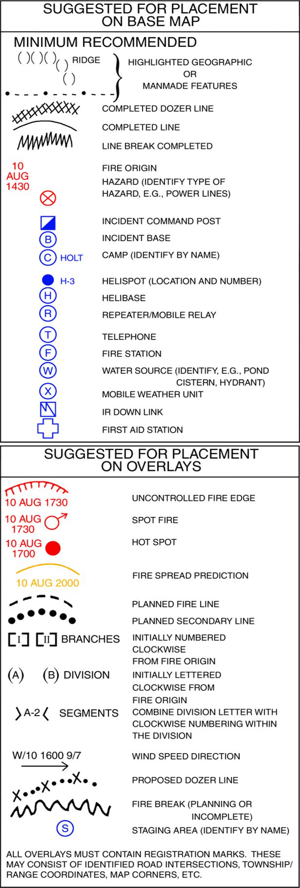

Scale: The scale is usually drawn at the bottom of the map. If no scale exists, indicate "Not drawn to scale." Remember that map scale may change with the copying process.
Title: Map Title should be at the top of the map. Incident name and number should also be included.
Author: The person who created the map should affix their name, position, and signature on the lower right corner.
North Arrow: Indicate the north direction for proper orientation.
Date/Time: Indicate the date and time the map was created and its information gathered.
Datum/Data: Indicate the map datum used, e.g. WGS 84, UTM 91N. Include the legends of all symbols used in the map.